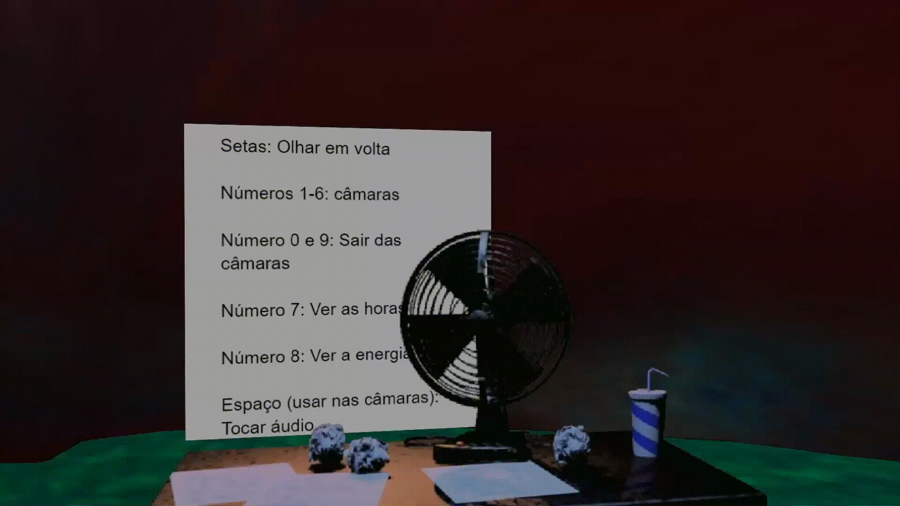
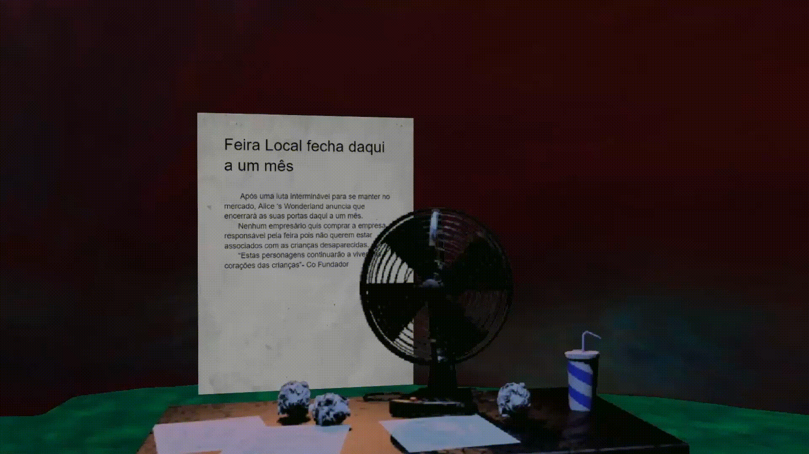

Grade: 20/20
This is a Five Nights at Freddy's fangame developed in the Alice 3 engine for a university project.
Alice's Wonderland is a fair with its grand reopening scheduled for next week. Your job seems pretty simple: survive five nights in Alice's. Unfortunately for you... you're not alone.

The game takes various mechanics from across the Five Nights at Freddy's franchise. Cameras from Fnaf 1-3, sound lures from Fnaf 3 and a salvage minigame from Fnaf 6.
Five Nights at Freddy's is property of Scott Cawthon. This is just a fangame I made for fun, not intended for public or commercial distribution. This project is not affiliated with or endorsed by Scott Cawthon, and no copyright infringement is intended.
